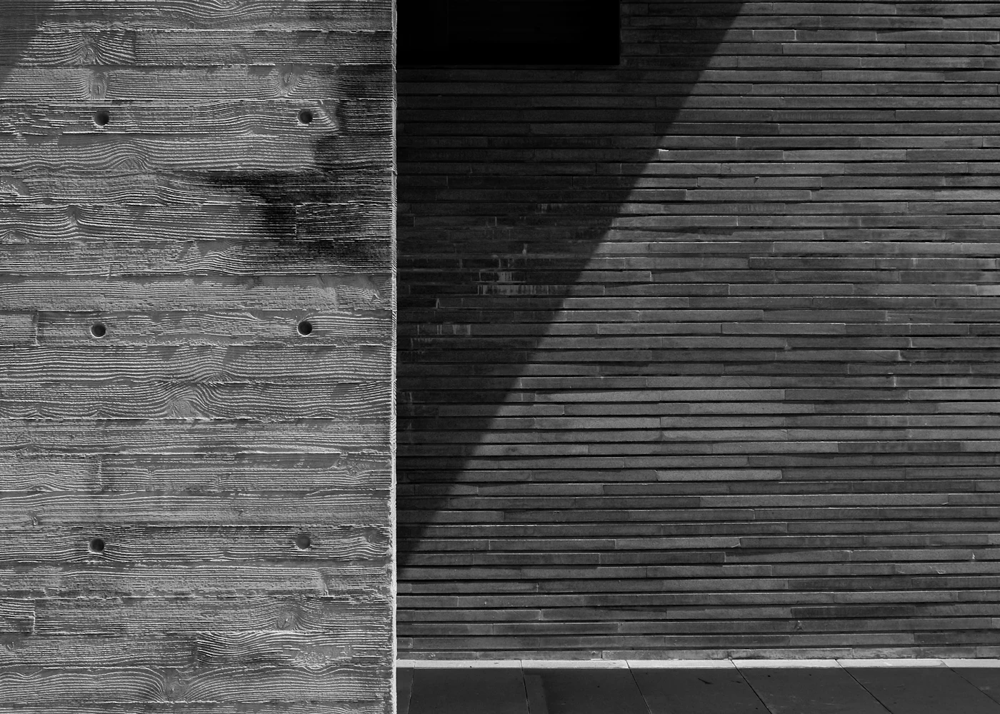

1995
Deko Egypt is founded
Contracting and architectural production begin, working alongside consultants and main contractors.
MarmoFiber did not begin as a colour range. It began as a recurring problem on real projects.
01 — The Beginning
For decades, Deko Egypt worked closely with architects, consultants, contractors, and developers to manufacture GRC, GFRC, moulded elements, decorative details, and customized façade solutions.
Across those projects, one recurring ambition became clear.
Design teams wanted the refinement and visual status of marble, but they also needed greater flexibility in weight, formation, repetition, installation, customization, and cost control.
This challenge became the starting point for MarmoFiber.

“Material is not the final layer of architecture. It is part of the idea.”
02 — The Name
The name MarmoFiber brings two ideas together.
Marmo
Marmo is the Italian word for marble. It communicates heritage, material beauty, architectural permanence, and the cultural significance of natural stone.
Its opening sound, “Mar,” also echoes the name of Marwan Younis, whose vision helped shape the identity and direction of the brand.
Fiber
Fiber represents the engineering principle behind the material: reinforcement, adaptability, controlled production, and the freedom to create beyond the conventional limitations of solid stone.
Together, the two words form MarmoFiber — a name that feels both architectural and technical, familiar and new, personal and universal.
03 — Ambition
Some brands become so closely connected to the products they pioneer that their names become part of the way people describe the category.
MarmoFiber was created with that level of ambition: to become the name architects, designers, developers, and contractors instinctively associate with fiber-engineered marble architectural surfaces.
MarmoFiber represents a defined material identity, a recognizable visual language, a controlled manufacturing approach, and the experience of Deko Egypt behind every project.
When the market thinks of this material category, the ambition is for it to think of one name first.
MarmoFiber™
04 — Deko Egypt
Deko Egypt provides the experience.
MarmoFiber defines the next material chapter.
Since 1995, Deko Egypt has worked across contracting, GRC and GFRC production, custom mould development, architectural detailing, finishing, logistics, and installation.
That experience is what allows MarmoFiber to be discussed as an architectural material rather than as a surface treatment — with a practical understanding of how it is manufactured, coordinated, delivered and installed within real projects.
1995
Contracting and architectural production begin, working alongside consultants and main contractors.
2000s
Mould development, façade elements, decorative details and customized architectural solutions become the core of the work.
2010s
Coordination widens across finishing, delivery sequencing and site installation — the parts of a material package that decide whether a design survives construction.
Today
An engineered architectural surface brand: a defined material identity with Deko Egypt's manufacturing foundation behind it.

Chairman
“We did not want to introduce another decorative surface. We wanted to create a material architects could recognize, specify, and build with — a material with its own identity and its own possibilities.”
Marwan Younis — Chairman
Next
Read how MarmoFiber is engineered, or go straight to the finishes and request a sample for your project.